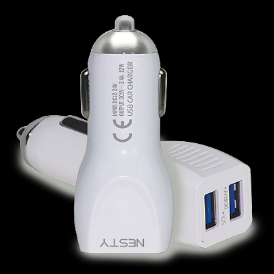

<li data-selection="colors" class="builder-step first-load">
	<section class="cd-step-content">
		<header>
			<h1>Select Color</h1>
			<span class="steps-indicator">Step <b>2</b> of 4</span>
		</header>

		<ul class="cd-product-previews">
			<li class="selected"></li>

		</ul>

		<ul class="cd-product-customizer">
			<li data-content="White" data-price="0" class="selected"><a data-color="white" href="#0">White</a></li>
		</ul>
	</section>
</li>


<li data-selection="summary" class="builder-step first-load">
	<section class="cd-step-content">
		<header>
			<h1>Summary</h1>
			<span class="steps-indicator">Step <b>3</b> of 3</span>
		</header>

		<ul class="summary-list">
			<li>
				<h2>Model</h2>

				

				<h3>GRCC-201</h3>

				<div>
					<ul class="summary-accessories">
						<li>2.4A Max. Ouput</li>
						<li>Optional Micro USB or Lightning Cable</li>
						<li>2 USB Ports</li>
						<li>Free 1000mm Data Cable Inside (V8/Type c/Iphone)</li>
						<li>Bilateral Spring Desing</li>
						<li>Intelligent transformation, Change Flow, Double stainless steel spring</li>
					</ul>
				</div>
			</li>


		</ul>
	</section>
</li>
